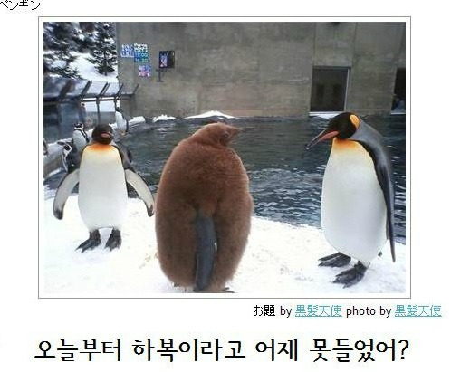
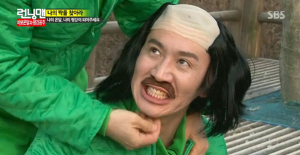
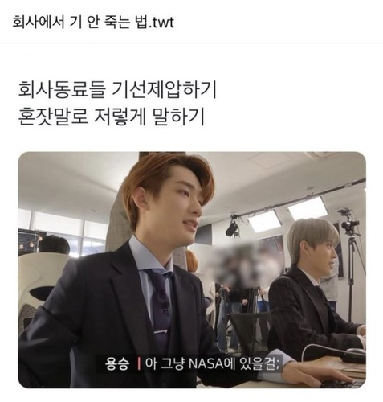
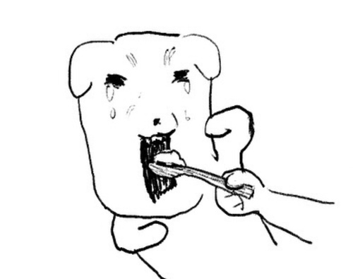
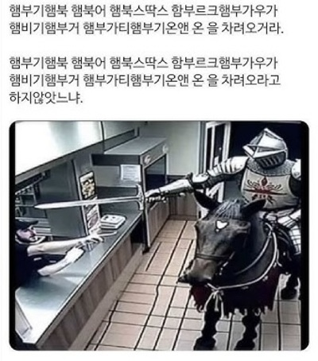

당신의 웃음을 훔쳐갈 센스있는 유머학개론
함께 대화하는 상대를 웃길 때 큰 기쁨을 느끼는 저는 다양한 방법으로 그들의 웃음을 쟁취하고는 합니다.
그중 제가 가장 애용하는 방법은 ‘인터넷 밈 이용하기’. 대중적인 트렌드를 반영하며 쉽게 공감대를 이끌어낼 수 있는
편리한 수단입니다. 인터넷을 자주 들락거리는 ’인터넷인간’인 저에게는 최적의 접근성으로 더욱 더 애용되고 있죠.
하지만 급변하는 온라인 세계의 파도를 타며 고차원적인 유머를 엮는 것은 생각보다 쉽지 않습니다.
눈 깜짝할 사이에 돌고도는 유행에 지쳐 포기해버리기 쉽상이죠.
이번 글에는 제가 자주쓰는 ‘인터넷 밈’에 대한 소소한 정보를 적어볼까 합니다.
‘밈’이라는 것에 특별한 자격이 필요한 것은 아닙니다.
그래도 굳이 기준을 잡자면 ‘대중적으로 널리 퍼질만한 매체를 통해 볼 수 있는가’,
‘많은 사람들에게 널리 인식되고 있는가’ 정도가 될 것 같습니다.
때문에 다양한 장르를 넘나들고 그 종류 또한 가지각색입니다. 그 중에서도 대표적인 갈래를 나열해보자면,
1.고전 밈
인터넷이 활발하지 않던 시절부터 구천을 떠돌던 소소한 웃긴 사진, 유머글,
혹은 평범한 사진에 웃긴 부가설명을 덧붙이는 ‘제목학원’ 등이 해당됩니다.
저로써는 검색창에 ‘제목학원’하고 쳐본게
살면서 가장 처음 접해본 밈이었습니다. 건전하고 상상력이 기발합니다.
보다보면 피식-하고 웃게 되는 것이 나름 힐링됐어요.
2.예능 밈
가장 활발하고 대중적입니다.
예능 방영분에서 웃긴 표정, 강렬한 자막 등을 캡처해 일상생활 속 감정이나 현상을 표현할 때 쓰입니다.
주로 무한도전, 런닝맨 등 유명 예능 프로에서 많이 파생되고 있습니다.
저같은 경우에는 (밀린 일이 많을 때, 스트레스를 받을 때) 카톡에서 효과적으로 분노와 어이없음을 표현하기 위해
박명수님, 이광수님 짤을 애용합니다.
3.케이팝 밈
아이돌들은 춤, 노래 등의 퍼포먼스 뿐만 아니라 소통에도 많은 총력을 기울입니다.
즉 일상의 전반적인 부분을 컨텐츠로 공개하죠. 그러한 과정에서 눈에 띄는 웃긴 행동, 대사, 표정 등이
팬들의 2차 편집에 의해 수면 위로 떠오르고 하나의 밈으로 자리잡게 됩니다.
팬들의 애정어린 시선, 집단적 웃수저 모먼트 등을 목격할 수 있습니다. 케이팝 팬들 사이에서는 이용도도 높은 편입니다. 저는 주로 기억나는 대사를 육성으로 내뱉습니다.
ex. ‘과제으르렁쿠왕컹컹크르렁흐렁크루렄으루르르르르렁 이것 뭐예요~~~?’
4.캐릭터 밈
하나의 캐릭터를 중심으로 여러가지 모션을 파생시켜 시리즈처럼 쓰는 밈입니다.
만화, sns 등 다양한 매체에 공개된 캐릭터들이 경계없이 소비됩니다.
요즘은 인기가 좋으면 이모티콘으로도 자주 출시되던데, 하나쯤 사볼만도?
5. sns밈
sns 게시물들이 재게시, 카피, 샤라웃(언급하기) 등의 바이럴 수단을 통해 유행의 반열에 오르게 됩니다.
선정된 밈들은 전혀 예상치 못한 움짤이 될 수도 있고, 숏폼에 까는 노래가 될 수도 있습니다.
그만큼 무궁무진한 가능성과 종류를 자랑하죠. 가장 예측이 어렵고 수명이 짧은 밈에 해당됩니다.
저는 친한 사람들 앞에서 켄드릭 라마의 투스텝춤도 추고 햄버거 먹고싶은 날은
햄부기햄북 햄북어 햄북스딱스 함부르크햄부가우가 햄비기햄부거 햄부가티햄부기온앤 온 하고 중얼거린답니다.
-우선 밈이 파생되고 퍼다 날라지는 다양한 매체에 대해 알아봐야합니다.
대표적인 매체로는 인스타, 트위터, 유튜브…
-또한 밈 발굴이란건 무작정 유행하는 것을 받아들이는 수동적인 태도만은 아닙니다.
본인의 유머 코드, 전반적인 취향 등이 반영되는 섬세한 디깅 작업이죠. 그러한 밈들이 모여 자신의 일부가 되기도 합니다.
독창적이고 유니크하게 스스로를 가꾸기 위해서는 우선 평소 자신의 흥미를 돌아볼 필요가 있습니다…
-기억력과 순발력을 기를 필요가 있습니다. 사실 밈의 진짜 진가는 내가 처한 현재의 상황에 순간적으로 기억해놓은 밈을 녹여내는데에 있습니다.
연결성을 만들어내세요. 특정 단어나 상황을 1차원적인 형태로…
-적극적인 자세가 필요합니다. 무궁무진한 인터넷 세계에 기꺼이 빠져보세요. 무작정 부딪혀보는 것도 좋은 방법입니다.
지금 당장 검색창에 기분, 상황을 나타내는 키워드 +…
잠깐 ! 밈에 대해
더 알고 싶으시다면?
밈을 찾고 적재적소에 이용하는 방법이 궁금하시다면ㅎ.ㅎ 기상천외한 밈과 최신 트렌드로 여러분을 웃겨드릴 준비가 되어있는 저를 찾아주세요.